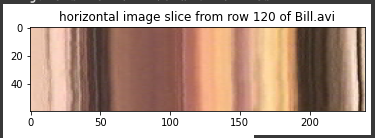
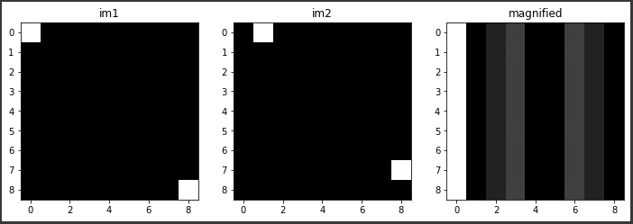
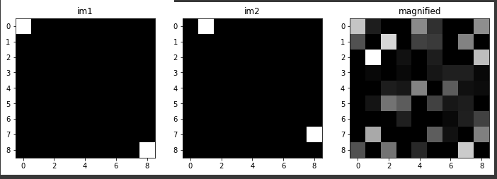

Motion Magnification.
The goal of this homework was to use computer vision processes to take an image and/or video (which is really just a bunch of images) and magnify any motion that is happening between the images.
A space time slice of a video is essentially taking the pixels at row or column x at every frame throughout the image. This will show you, over the course of a single image, how the pixels in a specific row/column changed throughout the duration of the entire video. With a long video, this slice can get very big, but we were working with short videos.
This video slice which shows the progression of pixels from row 120 of the Bill.avi file shows that there is not much movement.
All things considered, I was not able to get my code for this section to work. That being said, I still understand how these filters are supposed to work and what the purpose of them is.
A spatial-temporal filter works across an entire video file, and essentially acts as a gaussian filter, but only for things moving in a certain direction. This can essentially create a blur only around object moving at a specific velocity. It is most apparent when viewed through a video slice like above, because the slice capture how fast something moves across the frame. Only objects moving at the certain velocity defined by the gaussian filter will be sharp, the rest of the image will be blurred.
Using the phases of images, it was possible to notice how pixels change from image to image and then magnify that change so it is more visible. In our examples the images had very few pixels so many of the changes are immediately apparent, but that will not always be the case.
While this worked with simple images that only have one change, it did not work for more complex images with changes in multiple directions. I'm pretty sure this is because or algorithm cannot determine which pixel did which movement.
Here is where I got a little confused and mostly where I stopped being able to make progress. The next step is to reduce the images into smaller chunks in order to increase the likelihood that change only happens in one direction in any given chunk, allowing our original formula to work. I am missing something about how the code is supposed to work in this section which caused my reult to be wildy incorrect.
It really pains me to turn something in looking like this... I wish I had more time to try and figure out what I need to do, but I just did not have that kind of time this week :(
Unfortunately due to the same reasons that I couldn't get my earlier code in spatial-temporal gaussians and windowed image magnification to work, this also did not work for me. I'm not happy about this, but I made a judgement decision about how much time I had put into this, and how much time I needed to put into other assignment this week and my other assignments won. I would really like to come back to this because I am a double major in Film and CS, so this seems like a really cool way to mesh my passions together. This week was just not the week for me to do it.
I know it seems like I didn't get much done on this HW, but I really did put in all the time and effort I could. I'll come back to it as soon as I can because I hate leaving assignments unfinished like this.